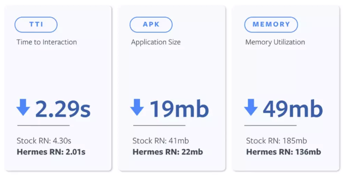
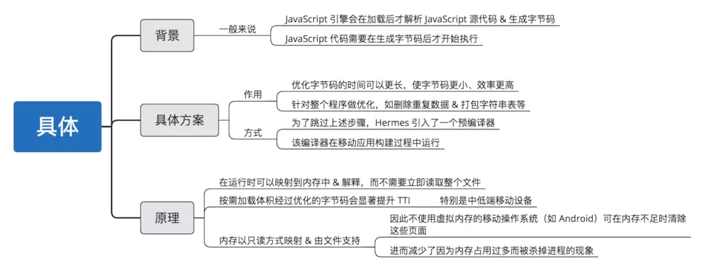
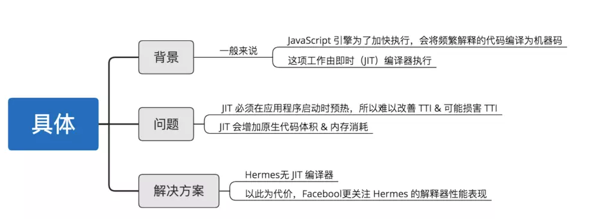
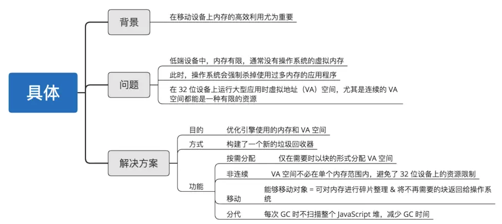
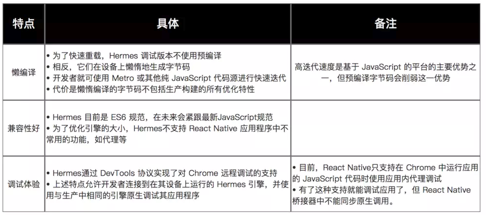

摘要： JS引擎开始升级了...
Fundebug经授权转载，版权归原作者所有。
Facebook在Chain React 2019 大会上发布的一个崭新JavaScript引擎
已开源 & 用于移动端React Native应用的集成
Facebook基于多方性能数据分析，发现JavaScript引擎本身就是影响React Native应用启动性能的重要因素
构建一个全新的JavaScript引擎，针对React Native应用，去提高移动客户端应用App的性能
特别注意：Hermes主要面向移动端React Native应用的性能优化，对浏览器 & Node.js 等服务端基础架构并不适用。
对于React Native应用（基于JavaScript引擎）来说，用户感知最明显的性能体验包括：
根据Facebook给出的官方性能优化性能数据如下：

示意图
从上述数据可知，Hermes引擎提升性能较为明显：
为了提升React Native应用的性能表现，Hermes引擎的设计主要是从是两个方面入手：编译方式 & 垃圾回收策略



在实际使用Hermes时，具备3个优点：懒编译、兼容性好 & 调试体验好，具体如下：

project.ext.react = [
entryFile: "index.js",
enableHermes: true
]HermesHermes引擎中的知识进行深入讲解 ，感兴趣的同学可以继续关注本人博客Carson_Ho的开发笔记Fundebug专注于JavaScript、微信小程序、微信小游戏、支付宝小程序、React Native、Node.js和Java线上应用实时BUG监控。 自从2016年双十一正式上线，Fundebug累计处理了10亿+错误事件，付费客户有阳光保险、核桃编程、荔枝FM、掌门1对1、微脉、青团社等众多品牌企业。欢迎大家免费试用！